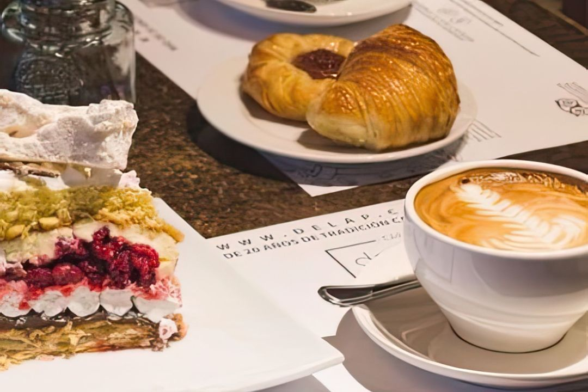
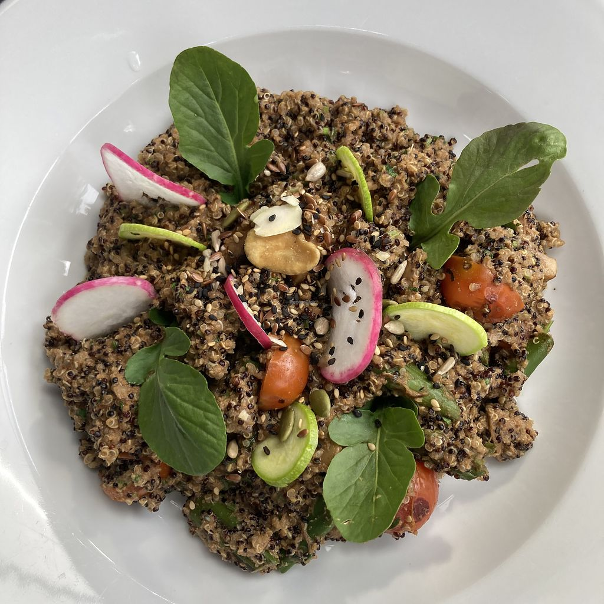
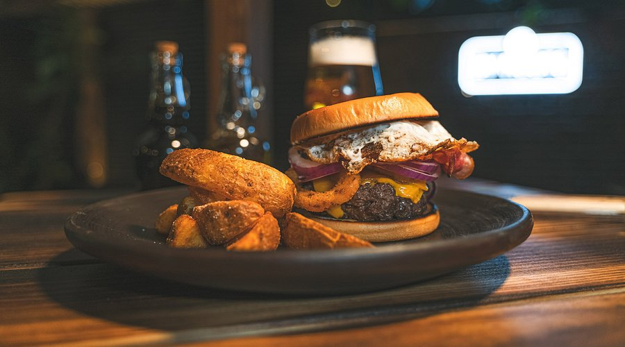

Depto. 308 · Pucón

La ubicación es uno de los mayores diferenciales del depto: puedes olvidarte del auto durante la estadía.
Estás en pleno centro de Pucón. Esto es lo que tienes caminando:

La playa principal del lago tiene una zona de aguas muy calmas y poca profundidad en el sector izquierdo entrando — ideal para los más chicos. El agua en verano llega a 18–20°C. Lleva flotadores porque no hay arriendo confiable cerca.

El río Trancura tiene dos tramos: el Bajo (fácil, recomendado para niños desde 6 años) y el Alto (más adrenalínico, desde 12). Todas las empresas locales incluyen equipo completo y guía. Reservar con anticipación en enero y febrero.

El sendero a las lagunas (Los Huaros) es manejable con niños y termina en vistas espectaculares. Son 4 horas ida y vuelta. Llevar snacks, agua y ropa de abrigo — la temperatura baja en el bosque.
El paseo por la costanera en la tarde es perfecto con niños. Hay un sector con patos y cisnes que enloquece a los más chicos. Desde el muelle salen botes y catamaranes con recorridos cortos — económicos y sin reserva.
El sol en Pucón pega fuerte en verano aunque no se sienta — protector solar es obligatorio. En enero y febrero la playa se llena hasta las 17:00, ir antes de las 11 o después de las 18. El volcán con niños menores de 8 no es recomendable por el esfuerzo físico.

El mejor lugar para partir el día. Café de especialidad, tostadas generosas, jugos naturales. Siempre hay ambiente local — no turístico. Llegar antes de las 10 para no esperar.

Cocina orgánica local en un ambiente con mucha identidad mapuche. Los desayunos son generosos y sanos. En el almuerzo tienen platos con ingredientes de productores de la zona. Uno de mis favoritos absolutos.

Pizza de masa delgada, bien hecha. Perfecto para comer con niños sin estrés — carta variada, ambiente relajado, y una buena selección de cervezas artesanales para los adultos. Nunca defrauda.

Para cuando los niños ya durmieron y los papás quieren una cena de verdad. Cocina con personalidad, buenos tragos y ambiente íntimo. Reservar con anticipación en temporada alta.

La ascensión completa es para adultos y niños mayores de 12. La alternativa para familias es el sendero a los miradores del CONAF — se llega a los 1.400 msnm con vistas increíbles sin el esfuerzo del cráter. Salir temprano para evitar nubes.

Las termas más espectaculares de la zona, a 35 km de Pucón. 20 piscinas de agua caliente en un cañón de helechos. Perfecto para toda la familia. Hay piscinas con diferentes temperaturas — los niños adoran explorarlas.
El tramo Bajo del Trancura es ideal para familias — class II y III, con guía y equipo incluido. Dura unas 2 horas y termina en un asado junto al río en muchas empresas. Hay varias operadoras en el camino al volcán.
Huerquehue es el más accesible para familias. El sendero a Laguna Los Huaros toma 4h y es manejable. También está el Parque Villarrica, con senderos más cortos y aptos para niños chicos. Pagar entrada en línea en conaf.cl.

A 50 km hay un mundo diferente: Coñaripe es un pueblo pequeño junto al Lago Calafquén, mucho menos turístico que Pucón. De paso se pueden visitar las Termas Río Liquiñe o las de Coñaripe. Un día perfecto para salir de la ruta habitual.


En la ladera del volcán. Pistas para todos los niveles. Temporada junio–septiembre.
Hay varias tiendas en la calle principal. El precio conviene más en el pueblo que en el cerro.
El centro tiene escuela de ski para niños desde 4 años. Instructores certificados y zona aparte.
El combo ski + termas en el mismo día es lo mejor del invierno sureño. Geométricas o Huife.